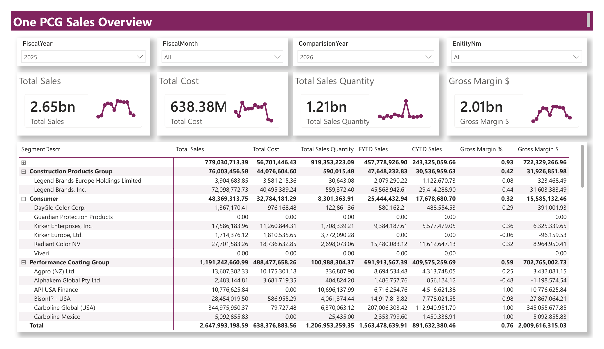

Business Problem
Sales and finance stakeholders needed a centralized view of revenue, costs, quantities, gross margin, and entity-level business performance.

Solution
Built a Power BI dashboard with executive KPI cards, fiscal-year filters, sales performance tables, margin analysis, and entity-level drill-down views.
Key Features
- Total sales tracking
- Total cost analysis
- Sales quantity monitoring
- Gross margin dollar reporting
- Gross margin percentage analysis
- FYTD and CYTD comparison views
- Entity-level business performance reporting
Business Impact
Helped business leaders review sales performance, monitor profitability, and compare fiscal-year progress across business entities in a single reporting view.
This dashboard contains confidential sales, cost, and margin data.
Screenshots and detailed business values are not publicly displayed.